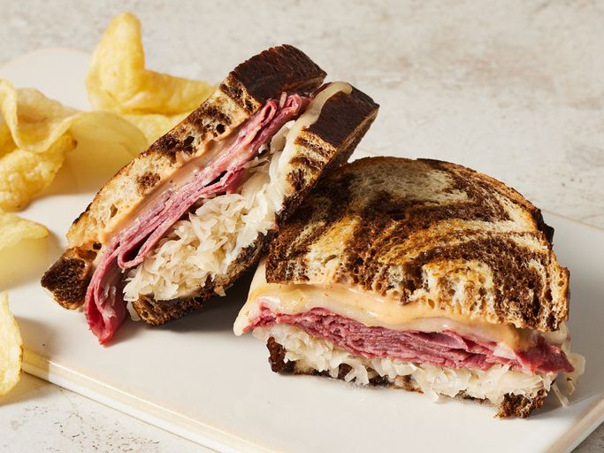

Reuben Sandwich

A Reuben sandwich is one of my family's fix-it-quick favorites. They are really delicious and easy to make. I like to serve them with big bowls of steaming vegetable soup and dill pickles on the side.
Ingredients
- 8 slices of rye bread
- 1/2 cup of Thousand Island dressing
- 8 slices of Swiss cheese
- 8 slices of deli sliced corned beef
- 1 cup of sauerkraut (drained)
- 2 tablespoons butter (softened)
Directions
- Gather all ingredients and preheat a large griddle or skillet over medium heat.
- Spread one side of bread slices evenly with the Thousand Island dressing.
-
On four bread slices, layer:
- One slice of Swiss cheese.
- 2 slices of corned beef.
- 1/4 cup sauerkraut and a second slice of Swiss cheese.
- Top with remaining bread slices, dressing-side down.
- Butter the top of each sandwich.
- Place sandwiches, butter-side down on the preheated griddle.
- Butter the top of each sandwich with remaining butter, then grill until both sides are golden brown.
- Serve hot!